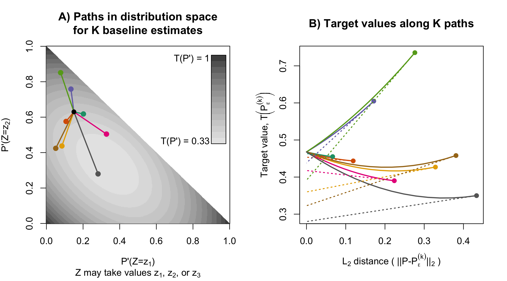

Research
This page summarizes some of my larger research projects. For a complete list of papers, please see my google scholar page.
Identifying subgroups where causal effects are especially high or low
Estimates of conditional average treatment effects allow interventions to be tailored to individuals. A well-known challenge in this field is that estimates can be unstable when the treatment groups are imbalanced. My research highlights that inverse-variance weights mitigate this problem, producing estimators that attain “oracle-efficiency” under the weakest conditions currently available. This work also sheds light on the performance of the popular “R-Learning” method, which uses a form of inverse-variance weighting implicitly.
Interpretability for machine learning models
Uninterpretable, black-box prediction models can provoke distrust, and their predictions can be difficult to combine with supplementary information in order to make decisions. In work with Cynthia Rudin and Francesca Dominici, we pointed out that U-statistics can be used to estimate well-known variable importance measures, which describe how much a given black-box model uses different covariates to gain prediction accuracy (Breiman 2001a, 2001b). We also developed a novel method for estimating how much unknown proprietary models rely on different covariates. Our method optimizes to find several approximations of the proprietary model that function as differently as possible, in terms of how much they rely on each covariate. We applied our method to study the dominant predictive factors in the criminal recidivism model COMPAS.
- JMLR paper - All Models are Wrong, but Many are Useful: Learning a Variable’s Importance by Studying an Entire Class of Prediction Models Simultaneously
Teaching visual intuition for influence functions
Statistical analyses often aim to describe a particular attribute (or estimand) of an underlying population distribution, such as the best fitting linear regression line. Influence functions measure how sensitive attributes like these are to changes in the underlying distribution. For example, influence functions can describe how much the best-fitting linear regression model will change if the proportion of points in a particular outlying region increases. Influence functions can also be used to improve estimation efficiency, generating estimators with certain kinds of optimality properties. Unfortunately, and despite their broad applicability, the technical theory underlying influence functions intimidates many researchers away from the subject.
In an educational paper with Edward Kennedy, we have tried make this topic more accessible. Our paper is based around two sets of visuals, which, we hope, can be similarly useful to illustrations of a derivative as the “slope at a point,” or illustrations of an integral as the “area under a curve.” For these calculus topics, a guiding intuition can be visualized in minutes, even though formal study typically takes over a semester of coursework.

- American Statistician paper: Visually Communicating and Teaching Intuition for Influence Functions
- arXiv link
Fast, exact bootstrap principal component analysis for high dimensional data (i.e. >1 million variables)
Principal Component Analysis (PCA) is a common dimension reduction step in many algorithms applied to high dimensional data, where the number of measurements per subject is much greater than the number of subjects. The resulting principal components (PCs) are random test statistics with sampling variability (i.e. if a new sample was recruited, the PCs for the new sample would be different). It is important to estimate this sampling variability, and the extent to which this variability propagates into test statistics that depend on PCA. A bootstrap procedure provides one method for variance estimation, but often comes with a prohibitively heavy computational burden.
To ease this burden, I worked with Vadim Zipunnikov and Brian Caffo to develop an exact method for calculating PCs in bootstrap samples that is an order of magnitude faster than the standard method. I applied this method to estimate standard errors of the 3 leading PCs of a brain MRI dataset (≈ 3 million voxels, 352 subjects) based on 1000 bootstrap samples (see below). Computation time was reduced from 4 days to 47 minutes, using a standard laptop.

The key intuition for this speed improvement comes from the fact that all bootstrap samples are contained in the same n-dimensional subspace as the original sample (where n is the sample size). If we represent bootstrap samples by their n-dimensional coordinates relative to this subspace, we can dramatically reduce computation times and memory requirements.
- JASA T&M paper
- bootSVD R package
for easy implementation of the bootstrap procedure
- ggBrain R package for creating brain image figures